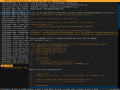
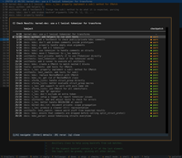

Development tools: Sashiko, b4 review, and API specification
Sashiko
Sashiko has been slowly gaining visibility in the development community; it was formally announced by Roman Gushchin on March 17. It is based on large language models, and its job is to review patches posted to the kernel mailing lists. According to Gushchin:
In my measurement, Sashiko was able to find 53% of bugs based on a completely unfiltered set of 1,000 recent upstream issues using "Fixes:" tags (using Gemini 3.1 Pro). Some might say that 53% is not that impressive, but 100% of these issues were missed by human reviewers.
Developers have already started paying attention to the tool's reviews, with some maintainers (Andrew Morton, for example) expecting patch submitters to read and respond to those reviews.
Sashiko is based on a set of review prompts initially developed by Chris Mason, but it uses "a
different multi-stage review protocol, which somewhat mimics the human
review process and forces the LLM to look at the proposed change from
different angles
". While the only access to Sashiko is through the web
interface now, the plans inevitably call for it to develop the ability to
send out reviews over email.
The system is described as being "fully open-source
", downloadable
from a GitHub
repository under the Apache-2.0 license. The ownership of the code
itself has been given to the Linux Foundation. Sashiko is, of course, an
open-source system that is built on a proprietary foundation (the Gemini
model), so it is not truly a free-software solution. But it is a step
closer to that than what we had before. And a tool like this does indeed
seem to bring value to the community. While the ability of LLMs to
generate kernel code is unproven at best, their ability to find obscure
problems in code written by humans has been reasonably well demonstrated.
The use of tools like Sashiko will surely grow, but there is a worrisome aspect as well. Since Sashiko depends on its underlying LLM, the Sashiko service depends on some generous benefactor being willing to make the LLM time it needs available. That is happening now, while the AI bubble remains pretty well inflated and the purveyors of LLMs are trying to create dependencies on those models wherever they can. At some point, though, that generosity seems likely to come to an end. Google is nicely donating LLM time for Sashiko now, but remember that the company once freely handed out Nexus One phones to developers. Now those developers are expected to buy their own toys. One hopes that, when that history repeats itself in the LLM context, the community will not have let the ability to do its own reviews atrophy entirely.
b4 review
Konstantin Ryabitsev's b4 tool has changed kernel development in a number of ways. Maintainers depend on it to simplify the tasks of applying patches and adding review tags. Increasingly, developers (especially those who do not work full-time in the kernel community) use it for email-free patch submission. B4 can download email threads from the lore archive, making it possible to read kernel-related discussions locally without subscribing to the linux-kernel firehose. The in-development review functionality, which is not yet part of a formal b4 release, promises to further ease the patch-review process.

A separate review screen allows looking at each patch in a series. With a single keystroke, an entire patch series can be fed to the checkpatch.pl tool, and the results gathered for inspection. Another keystroke opens an editor with a specific patch where the reviewer can enter comments in the usual way. There are operations to add tags (Reviewed-by, for example) to the response. Inevitably, another command will feed the patch to the user's LLM-based review system of choice; Sashiko integration is underway as of this writing. Once the comments are deemed ready, they can be emailed back out with another command.
For maintainers, b4 review can bring in comments sent by others for consideration. There are also tools to apply a set of accepted patches, and to help with conflict resolution. And, at the end of it all, there is feature to automatically send "thank-you" notes to the submitters whose patches have been applied.

It will get there, though, and it has the potential to change how a lot of people work. b4 review is not the first patch-tracking and management tool out there, but it is one that is designed to work in a distributed manner, without a central server. It is a part of Ryabitsev's effort to reduce the role of email in the development process to a sort of transport layer, and to free contributors from the need to engage directly with it if they do not wish to. The lore archive would be hard to replace, but b4 review does not otherwise depend on any system being up and available. This is a tool that is worth watching.
API specification
There has been a recurring desire for better ways to specify the interface that the kernel provides to user space — and to verify that this API actually matches the specification. A specification of this type, if it could be created and maintained, would serve a number of purposes. It would help developers ensure that patches do not change the user-space API in incompatible ways. Formal verification tools would have a better description of how the kernel is supposed to work. Development environments could use this description to assist in the writing and debugging of code. And so on.
Efforts to implement this sort of specification have typically languished, though, for a number of reasons. For example, a group including Gabriele Paoloni has been working on a specification language for some time, but has struggled to attract interested developers. A separate effort in this area, most recently posted on March 13, is a specification framework by Sasha Levin. This is a new version of work that was last covered here in 2025.
Like other attempts, Levin's work is focused on the kernel-doc comments that already describe thousands of functions within the kernel. It expands the coverage of those comments to describe, in a formal way, many aspects of a function's behavior. As an example, the documentation for this framework provides an example comment for kmalloc() (which is not part of the user-space API, but internal functions can be specified too):
/**
* kmalloc - allocate kernel memory
* @size: Number of bytes to allocate
* @flags: Allocation flags (GFP_*)
*
* context-flags: KAPI_CTX_PROCESS | KAPI_CTX_SOFTIRQ | KAPI_CTX_HARDIRQ
* param-count: 2
*
* param: size
* type: KAPI_TYPE_UINT
* flags: KAPI_PARAM_IN
* constraint-type: KAPI_CONSTRAINT_RANGE
* range: 0, KMALLOC_MAX_SIZE
*
* error: ENOMEM, Out of memory
* desc: Insufficient memory available for the requested allocation.
*/
The first four lines are part of the existing kernel-doc format; everything after that is new. This specification describes the contexts within which kmalloc() can be called, various details about the parameters to the function, and the return value. For a rather more detailed example, see the specification for the read() system call, which goes on for several pages. It covers the parameters and (numerous) error returns, as seen above, but also includes information on signal handling, lock acquisition, side effects (modifying the file position, for example), and more.
There is an alternative format using macros rather than comments; it's not entirely clear why the second format exists. Beyond functions, there are plans for facilities to describe the arguments to ioctl() calls.
Once the specifications exist, there are a number of things that can be done with them. There is a tool to ensure, at compile time, that the specifications are consistent with the declarations of the functions they describe. The specifications are available via the debugfs filesystem in human-readable, JSON, and XML formats. There is also a run-time validation mode that checks whether functions are called in an allowed context with parameters within the given constraints, and that the return value is as specified. The cost of all this is nearly 500KB of memory used for each described function; this is not a feature one would want to enable in production kernels.
The problem with this kind of specification mechanism is always the same.
Few people disagree with having precise specifications for how the code is
supposed to work, but even fewer seem to be willing to put in the time to
create and maintain those specifications. The work can be tedious and
tends not to astonish users with exciting new features; it is the sort of
thing that people generally need to be paid to do. LLMs can be pressed
into service for some of this work (as was done for this series), but
humans still need to be involved to be sure that the results are accurate —
and to maintain them going forward. Creating this sort of framework is
feasible from a technology point of view, but success in this area will
also depend on solving the social problem of creating and maintaining the
specifications themselves.
| Index entries for this article | |
|---|---|
| Kernel | Development tools/ABI-related |
| Kernel | Development tools/b4 |
| Kernel | Development tools/Large language models |
Posted Mar 21, 2026 8:03 UTC (Sat)
by smurf (subscriber, #17840)
[Link]
The hyperscalers benefit a lot from Linux (and might benefit even more from the experience gained by doing a job like this). So maybe we should convince one of them to support it?
Posted Mar 25, 2026 19:03 UTC (Wed)
by csamuel (✭ supporter ✭, #2624)
[Link]
That and using korgalore with lei has been a great help in keeping up to speed.
LLMs
Playing with "b4 review"